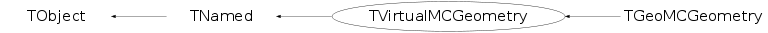

class TVirtualMCGeometry: public TNamed
Virtual MCGeometry provides a virtual interface to Monte Carlo geometry construction.
Function Members (Methods)
This is an abstract class, constructors will not be documented.
Look at the header to check for available constructors.
public:
| virtual | ~TVirtualMCGeometry() |
| void | TObject::AbstractMethod(const char* method) const |
| virtual void | TObject::AppendPad(Option_t* option = "") |
| virtual void | TObject::Browse(TBrowser* b) |
| static TClass* | Class() |
| virtual const char* | TObject::ClassName() const |
| virtual void | TNamed::Clear(Option_t* option = "") |
| virtual TObject* | TNamed::Clone(const char* newname = "") const |
| virtual Int_t | TNamed::Compare(const TObject* obj) const |
| virtual void | TNamed::Copy(TObject& named) const |
| virtual void | TObject::Delete(Option_t* option = "")MENU |
| virtual Int_t | TObject::DistancetoPrimitive(Int_t px, Int_t py) |
| virtual void | TObject::Draw(Option_t* option = "") |
| virtual void | TObject::DrawClass() constMENU |
| virtual TObject* | TObject::DrawClone(Option_t* option = "") constMENU |
| virtual void | TObject::Dump() constMENU |
| virtual void | TObject::Error(const char* method, const char* msgfmt) const |
| virtual void | TObject::Execute(const char* method, const char* params, Int_t* error = 0) |
| virtual void | TObject::Execute(TMethod* method, TObjArray* params, Int_t* error = 0) |
| virtual void | TObject::ExecuteEvent(Int_t event, Int_t px, Int_t py) |
| virtual void | TObject::Fatal(const char* method, const char* msgfmt) const |
| virtual void | TNamed::FillBuffer(char*& buffer) |
| virtual TObject* | TObject::FindObject(const char* name) const |
| virtual TObject* | TObject::FindObject(const TObject* obj) const |
| virtual Option_t* | TObject::GetDrawOption() const |
| static Long_t | TObject::GetDtorOnly() |
| virtual const char* | TObject::GetIconName() const |
| virtual Bool_t | GetMaterial(const TString& volumeName, TString& name, Int_t& imat, Double_t& a, Double_t& z, Double_t& density, Double_t& radl, Double_t& inter, TArrayD& par) |
| virtual Bool_t | GetMedium(const TString& volumeName, TString& name, Int_t& imed, Int_t& nmat, Int_t& isvol, Int_t& ifield, Double_t& fieldm, Double_t& tmaxfd, Double_t& stemax, Double_t& deemax, Double_t& epsil, Double_t& stmin, TArrayD& par) |
| virtual const char* | TNamed::GetName() const |
| virtual char* | TObject::GetObjectInfo(Int_t px, Int_t py) const |
| static Bool_t | TObject::GetObjectStat() |
| virtual Option_t* | TObject::GetOption() const |
| virtual Bool_t | GetShape(const TString& volumePath, TString& shapeType, TArrayD& par) |
| virtual const char* | TNamed::GetTitle() const |
| virtual Bool_t | GetTransformation(const TString& volumePath, TGeoHMatrix& matrix) |
| virtual UInt_t | TObject::GetUniqueID() const |
| virtual void | Gsbool(const char* onlyVolName, const char* manyVolName) |
| virtual void | Gsdvn(const char* name, const char* mother, Int_t ndiv, Int_t iaxis) |
| virtual void | Gsdvn2(const char* name, const char* mother, Int_t ndiv, Int_t iaxis, Double_t c0i, Int_t numed) |
| virtual void | Gsdvt(const char* name, const char* mother, Double_t step, Int_t iaxis, Int_t numed, Int_t ndvmx) |
| virtual void | Gsdvt2(const char* name, const char* mother, Double_t step, Int_t iaxis, Double_t c0, Int_t numed, Int_t ndvmx) |
| virtual void | Gsord(const char* name, Int_t iax) |
| virtual void | Gspos(const char* name, Int_t nr, const char* mother, Double_t x, Double_t y, Double_t z, Int_t irot, const char* konly = "ONLY") |
| virtual void | Gsposp(const char* name, Int_t nr, const char* mother, Double_t x, Double_t y, Double_t z, Int_t irot, const char* konly, Float_t* upar, Int_t np) |
| virtual void | Gsposp(const char* name, Int_t nr, const char* mother, Double_t x, Double_t y, Double_t z, Int_t irot, const char* konly, Double_t* upar, Int_t np) |
| virtual Int_t | Gsvolu(const char* name, const char* shape, Int_t nmed, Float_t* upar, Int_t np) |
| virtual Int_t | Gsvolu(const char* name, const char* shape, Int_t nmed, Double_t* upar, Int_t np) |
| virtual Bool_t | TObject::HandleTimer(TTimer* timer) |
| virtual ULong_t | TNamed::Hash() const |
| virtual void | TObject::Info(const char* method, const char* msgfmt) const |
| virtual Bool_t | TObject::InheritsFrom(const char* classname) const |
| virtual Bool_t | TObject::InheritsFrom(const TClass* cl) const |
| virtual void | TObject::Inspect() constMENU |
| void | TObject::InvertBit(UInt_t f) |
| virtual TClass* | IsA() const |
| virtual Bool_t | TObject::IsEqual(const TObject* obj) const |
| virtual Bool_t | TObject::IsFolder() const |
| Bool_t | TObject::IsOnHeap() const |
| virtual Bool_t | TNamed::IsSortable() const |
| Bool_t | TObject::IsZombie() const |
| virtual void | TNamed::ls(Option_t* option = "") const |
| virtual void | Material(Int_t& kmat, const char* name, Double_t a, Double_t z, Double_t dens, Double_t radl, Double_t absl, Float_t* buf, Int_t nwbuf) |
| virtual void | Material(Int_t& kmat, const char* name, Double_t a, Double_t z, Double_t dens, Double_t radl, Double_t absl, Double_t* buf, Int_t nwbuf) |
| virtual void | Matrix(Int_t& krot, Double_t thetaX, Double_t phiX, Double_t thetaY, Double_t phiY, Double_t thetaZ, Double_t phiZ) |
| void | TObject::MayNotUse(const char* method) const |
| virtual void | Medium(Int_t& kmed, const char* name, Int_t nmat, Int_t isvol, Int_t ifield, Double_t fieldm, Double_t tmaxfd, Double_t stemax, Double_t deemax, Double_t epsil, Double_t stmin, Float_t* ubuf, Int_t nbuf) |
| virtual void | Medium(Int_t& kmed, const char* name, Int_t nmat, Int_t isvol, Int_t ifield, Double_t fieldm, Double_t tmaxfd, Double_t stemax, Double_t deemax, Double_t epsil, Double_t stmin, Double_t* ubuf, Int_t nbuf) |
| virtual Int_t | MediumId(const char* mediumName) const |
| virtual void | Mixture(Int_t& kmat, const char* name, Float_t* a, Float_t* z, Double_t dens, Int_t nlmat, Float_t* wmat) |
| virtual void | Mixture(Int_t& kmat, const char* name, Double_t* a, Double_t* z, Double_t dens, Int_t nlmat, Double_t* wmat) |
| virtual Int_t | NofVolDaughters(const char* volName) const |
| virtual Int_t | NofVolumes() const |
| virtual Bool_t | TObject::Notify() |
| void | TObject::Obsolete(const char* method, const char* asOfVers, const char* removedFromVers) const |
| static void | TObject::operator delete(void* ptr) |
| static void | TObject::operator delete(void* ptr, void* vp) |
| static void | TObject::operator delete[](void* ptr) |
| static void | TObject::operator delete[](void* ptr, void* vp) |
| void* | TObject::operator new(size_t sz) |
| void* | TObject::operator new(size_t sz, void* vp) |
| void* | TObject::operator new[](size_t sz) |
| void* | TObject::operator new[](size_t sz, void* vp) |
| virtual void | TObject::Paint(Option_t* option = "") |
| virtual void | TObject::Pop() |
| virtual void | TNamed::Print(Option_t* option = "") const |
| virtual Int_t | TObject::Read(const char* name) |
| virtual void | TObject::RecursiveRemove(TObject* obj) |
| void | TObject::ResetBit(UInt_t f) |
| virtual void | TObject::SaveAs(const char* filename = "", Option_t* option = "") constMENU |
| virtual void | TObject::SavePrimitive(ostream& out, Option_t* option = "") |
| void | TObject::SetBit(UInt_t f) |
| void | TObject::SetBit(UInt_t f, Bool_t set) |
| virtual void | TObject::SetDrawOption(Option_t* option = "")MENU |
| static void | TObject::SetDtorOnly(void* obj) |
| virtual void | TNamed::SetName(const char* name)MENU |
| virtual void | TNamed::SetNameTitle(const char* name, const char* title) |
| static void | TObject::SetObjectStat(Bool_t stat) |
| virtual void | TNamed::SetTitle(const char* title = "")MENU |
| virtual void | TObject::SetUniqueID(UInt_t uid) |
| virtual void | ShowMembers(TMemberInspector& insp) |
| virtual Int_t | TNamed::Sizeof() const |
| virtual void | Streamer(TBuffer& b) |
| void | StreamerNVirtual(TBuffer& b) |
| virtual void | TObject::SysError(const char* method, const char* msgfmt) const |
| Bool_t | TObject::TestBit(UInt_t f) const |
| Int_t | TObject::TestBits(UInt_t f) const |
| virtual void | TObject::UseCurrentStyle() |
| virtual Int_t | VolDaughterCopyNo(const char* volName, Int_t i) const |
| virtual const char* | VolDaughterName(const char* volName, Int_t i) const |
| virtual Int_t | VolId(const char* volName) const |
| virtual Int_t | VolId2Mate(Int_t id) const |
| virtual const char* | VolName(Int_t id) const |
| virtual void | TObject::Warning(const char* method, const char* msgfmt) const |
| virtual Int_t | TObject::Write(const char* name = 0, Int_t option = 0, Int_t bufsize = 0) |
| virtual Int_t | TObject::Write(const char* name = 0, Int_t option = 0, Int_t bufsize = 0) const |
protected:
| virtual void | TObject::DoError(int level, const char* location, const char* fmt, va_list va) const |
| void | TObject::MakeZombie() |
| TVirtualMCGeometry& | operator=(const TVirtualMCGeometry&) |
Data Members
public:
| enum TObject::EStatusBits { | kCanDelete | |
| kMustCleanup | ||
| kObjInCanvas | ||
| kIsReferenced | ||
| kHasUUID | ||
| kCannotPick | ||
| kNoContextMenu | ||
| kInvalidObject | ||
| }; | ||
| enum TObject::[unnamed] { | kIsOnHeap | |
| kNotDeleted | ||
| kZombie | ||
| kBitMask | ||
| kSingleKey | ||
| kOverwrite | ||
| kWriteDelete | ||
| }; |
protected:
| TString | TNamed::fName | object identifier |
| TString | TNamed::fTitle | object title |
Class Charts
{kind=link}
{kind=link}
{kind=link}
{kind=link}

Function documentation
void Material(Int_t& kmat, const char* name, Double_t a, Double_t z, Double_t dens, Double_t radl, Double_t absl, Float_t* buf, Int_t nwbuf)
detector composition
Define a material
kmat number assigned to the material
name material name
a atomic mass in au
z atomic number
dens density in g/cm3
absl absorption length in cm;
if >=0 it is ignored and the program
calculates it, if <0. -absl is taken
radl radiation length in cm
if >=0 it is ignored and the program
calculates it, if <0. -radl is taken
buf pointer to an array of user words
nwbuf number of user words
void Mixture(Int_t& kmat, const char* name, Float_t* a, Float_t* z, Double_t dens, Int_t nlmat, Float_t* wmat)
The same as previous but in double precision Define mixture or compound with a number kmat composed by the basic nlmat materials defined by arrays a, z and wmat If nlmat > 0 then wmat contains the proportion by weights of each basic material in the mixture. If nlmat < 0 then wmat contains the number of atoms of a given kind into the molecule of the compound. In this case, wmat in output is changed to relative weights.
void Medium(Int_t& kmed, const char* name, Int_t nmat, Int_t isvol, Int_t ifield, Double_t fieldm, Double_t tmaxfd, Double_t stemax, Double_t deemax, Double_t epsil, Double_t stmin, Float_t* ubuf, Int_t nbuf)
The same as previous but in double precision Define a medium. kmed tracking medium number assigned name tracking medium name nmat material number isvol sensitive volume flag ifield magnetic field: - ifield = 0 if no magnetic field; - ifield = -1 if user decision in guswim; - ifield = 1 if tracking performed with g3rkuta; - ifield = 2 if tracking fieldm max. field value (kilogauss) tmaxfd max. angle due to field (deg/step) stemax max. step allowed deemax max. fraction of energy lost in a step epsil tracking precision (cm) stmin min. step due to continuous processes (cm) ubuf pointer to an array of user words nbuf number of user words performed with g3helix; ifield = 3 if tracking performed with g3helx3.
void Matrix(Int_t& krot, Double_t thetaX, Double_t phiX, Double_t thetaY, Double_t phiY, Double_t thetaZ, Double_t phiZ)
The same as previous but in double precision Define a rotation matrix krot rotation matrix number assigned thetaX polar angle for axis X phiX azimuthal angle for axis X thetaY polar angle for axis Y phiY azimuthal angle for axis Y thetaZ polar angle for axis Z phiZ azimuthal angle for axis Z
Int_t Gsvolu(const char* name, const char* shape, Int_t nmed, Double_t* upar, Int_t np)
functions from GGEOM Create a new volume name Volume name shape Volume type nmed Tracking medium number np Number of shape parameters upar Vector containing shape parameters The same as previous but in double precision
void Gsdvn2(const char* name, const char* mother, Int_t ndiv, Int_t iaxis, Double_t c0i, Int_t numed)
Create a new volume by dividing an existing one.
It divides a previously defined volume
name Volume name
mother Mother volume name
ndiv Number of divisions
iaxis Axis value:
X,Y,Z of CAXIS will be translated to 1,2,3 for IAXIS.
Create a new volume by dividing an existing one.
Divide mother into ndiv divisions called name
along axis iaxis starting at coordinate value c0i.
The new volume created will be medium number numed.
void Gsdvt2(const char* name, const char* mother, Double_t step, Int_t iaxis, Double_t c0, Int_t numed, Int_t ndvmx)
Create a new volume by dividing an existing one Divide mother into divisions called name along axis iaxis in steps of step. If not exactly divisible will make as many as possible and will center them with respect to the mother. Divisions will have medium number numed. If numed is 0, numed of mother is taken. ndvmx is the expected maximum number of divisions (If 0, no protection tests are performed in Geant3) Create a new volume by dividing an existing one Divides mother into divisions called name along axis iaxis starting at coordinate value c0 with step size step. The new volume created will have medium number numed. If numed is 0, numed of mother is taken. ndvmx is the expected maximum number of divisions (If 0, no protection tests are performed in Geant3)
void Gspos(const char* name, Int_t nr, const char* mother, Double_t x, Double_t y, Double_t z, Int_t irot, const char* konly = "ONLY")
Flag volume name whose contents will have to be ordered along axis iax, by setting the search flag to -iax (Geant3 only) Position a volume into an existing one. It positions a previously defined volume in the mother. name Volume name nr Copy number of the volume mother Mother volume name x X coord. of the volume in mother ref. sys. y Y coord. of the volume in mother ref. sys. z Z coord. of the volume in mother ref. sys. irot Rotation matrix number w.r.t. mother ref. sys. konly ONLY/MANY flag
void Gsposp(const char* name, Int_t nr, const char* mother, Double_t x, Double_t y, Double_t z, Int_t irot, const char* konly, Double_t* upar, Int_t np)
Place a copy of generic volume name with user number nr inside mother, with its parameters upar(1..np) The same as previous but in double precision
Bool_t GetTransformation(const TString& volumePath, TGeoHMatrix& matrix)
Helper function for resolving MANY. Specify the ONLY volume that overlaps with the specified MANY and has to be substracted. (Geant4 only) functions for access to geometry Return the transformation matrix between the volume specified by the path volumePath and the top or master volume.
Bool_t GetMaterial(const TString& volumeName, TString& name, Int_t& imat, Double_t& a, Double_t& z, Double_t& density, Double_t& radl, Double_t& inter, TArrayD& par)
Return the name of the shape (shapeType) and its parameters par for the volume specified by the path volumePath . Return the material parameters for the volume specified by the volumeName.
Int_t VolId(const char* volName) const
Return the medium parameters for the volume specified by the volumeName. functions for drawing virtual void DrawOneSpec(const char* name) = 0; virtual void Gsatt(const char* name, const char* att, Int_t val) = 0; virtual void Gdraw(const char*,Double_t theta = 30, Double_t phi = 30, Double_t psi = 0, Double_t u0 = 10, Double_t v0 = 10, Double_t ul = 0.01, Double_t vl = 0.01) = 0; Euclid virtual void WriteEuclid(const char*, const char*, Int_t, Int_t) = 0; get methods Return the unique numeric identifier for volume name volName
Int_t MediumId(const char* mediumName) const
Return the unique numeric identifier for medium name mediumName
Int_t NofVolDaughters(const char* volName) const
Return number of daughters of the volume specified by volName
const char* VolDaughterName(const char* volName, Int_t i) const
Return the name of i-th daughter of the volume specified by volName
Int_t VolDaughterCopyNo(const char* volName, Int_t i) const
Return the copyNo of i-th daughter of the volume specified by volName
TVirtualMCGeometry & operator=(const TVirtualMCGeometry& )